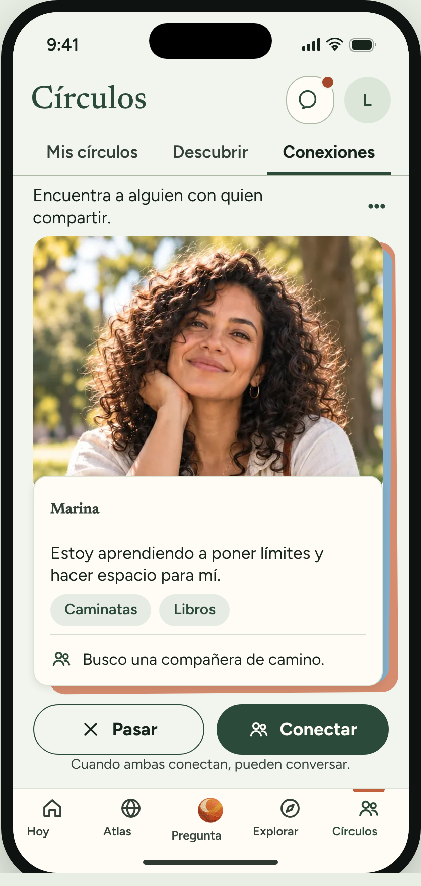
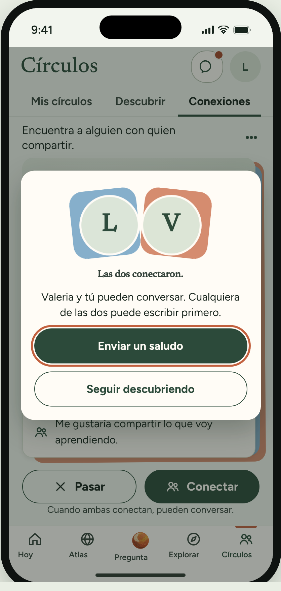
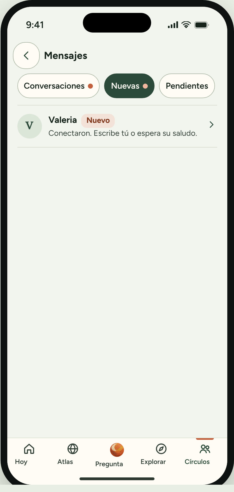

Propuesta · prototipo
Conexiones
Ver un perfil a la vez y conectar con otra mujer. Si las dos conectan, pueden conversar. Los perfiles son ejemplos.



Orden de preguntas
- Antes de mostrar: «¿Hay alguien con quien hables de dinero o trabajo? ¿Cómo la conociste?»
- Muestra la pantalla 1. «Con tus palabras, ¿qué crees que hace esto?»
- Muestra las pantallas 2 y 3.
- «¿En qué momento de tu semana usarías esto, si lo usarías?» (y para qué)
- «¿Qué te haría no usarlo?»
- «¿Qué necesitarías saber o ver para sentirte segura conectando con otra mujer?»
- «¿Compartirías tu foto? ¿Por qué sí o no?»
- Al final: «Del 1 al 5, ¿qué tan útil sería para ti? ¿Por qué ese número?»
- Después de las dos ideas: «Si Elara solo pudiera añadir una de estas dos este mes, ¿cuál elegirías y por qué?»
Capturas reales del prototipo de Conexiones (estilo B por defecto, iPhone 15). Unos 3 minutos más 1–2 para elegir.